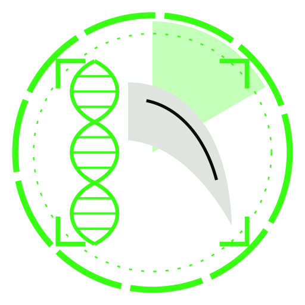
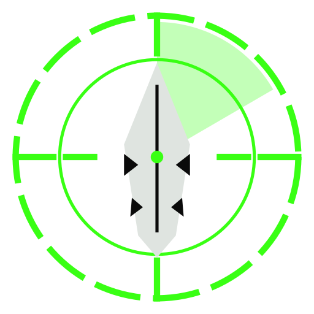
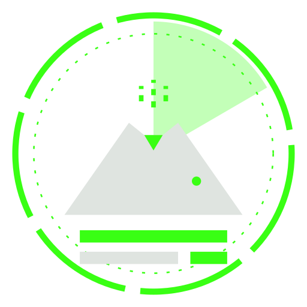

Encyclopédie
Fiches taxonomiques et analyses biologiques des 75 espèces recensées.
Consulter →
En 2049, après la Troisième Guerre mondiale, des entreprises clonent une faune disparue sur une
nouvelle île secrète en Méditerranée.
Le projet échoue en raison de la crise mondiale et est abandonné, mais il subsiste grâce à une
source d'énergie volcanique.
En mai 2068, une rupture de confinement majeure libère ces bêtes préhistoriques et ces chimères sur
une humanité désarmée.
« Paléosurvie » est le site web clandestin créé pour divulguer des dossiers classifiés et des
tactiques de survie à la population.
Accédez aux modules prioritaires de survie

Fiches taxonomiques et analyses biologiques des 75 espèces recensées.
Consulter →
Protocoles d'urgence, fabrication d'équipements et consignes de sécurité.
Accéder →
Rapports déclassifiés des laboratoires Z-Territoire et Complexe Wara.
Explorer →